SSH解锁
不过这款路由器其实有三种刷机方案，这三种方案在论坛里混杂一起，新手看起来可能会比较乱，我会在视频里做下梳理并一一演示操作步骤。
不过无论用哪种方法，开始的步骤都是一样的。我们需要先解锁Telnet，再开启SSH。
开启ssh的过程其实就是利用固件的漏洞获得路由器的最高管理权限，有点类似IOS越狱和安卓系统解除BL锁。
刷机的过程其实一点也不难，只是复制一些现成的代码就可以。我们只需严格按照步骤，并仔细一点，一般新手也半个小时以内就可以刷好一台路由器。
刷机前的准备工作，我们需要把红米ax6000的wan口连接到现有网络中。并且在ax6000的lan口上连接上一台电脑。建议用网线将电脑和路由器连接起来，这样刷机会更稳定一些。 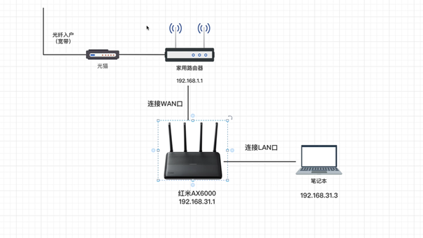
软件方面，我们需要准备一个能连接ssh和Telnet的工具。我这里用的mobaxterm。还需要一个支持解锁的官方固件，这里推荐1.6.0这个版本。
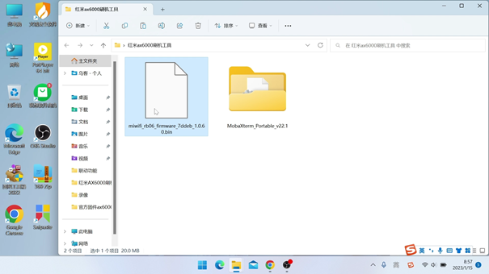
然后是解锁ssh代码，所有软件和代码我都会一并打包并把链接放在视频简介或者评论区里
一、系统降级
首先要确定下路由器系统的版本，如果不是可以解锁的版本，那么需要在“系统设置”里，把当前系统版本手动降级为1.6.0。
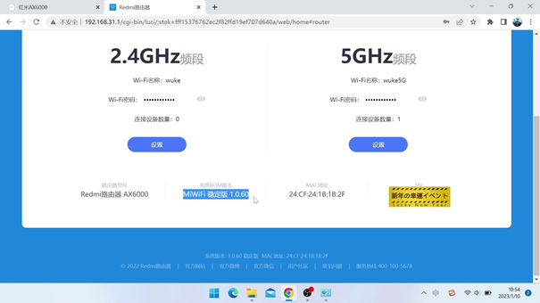
如果当前版本已经是可解锁的则可以忽略这一步。目前可解锁的版本号有1.0.60；1.0.48；1.0.28
二、获取stok
登录到路由器的后台，在地址栏上方会生成一串stok的数值。我们需要把stok等于后的这串数字复制下来，这串数字是解锁ssh的关键，不过在每个机器上生成的值都不同，而且每次重启路由器以后这个值都会改变。
路由器在刷机之前最好能初始化一次，并且设置成路由模式。 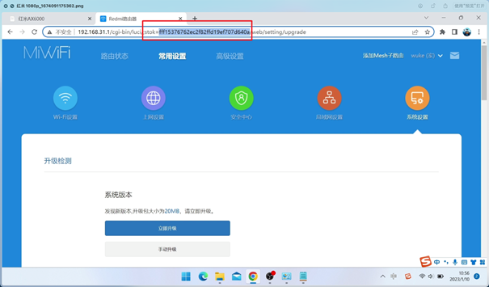
所以每次路由器重启后，我们都需要重新复制一下这串代码。
三、打开红米AX6000的开发者模式
首先我们需要解锁下ax6000的开发者模式
1、复制以下代码
http://192.168.31.1/cgi-bin/luci/;stok={token}/api/misystem/set_sys_time?timezone=%20%27%20%3B%20zz%3D%24%28dd%20if%3D%2Fdev%2Fzero%20bs%3D1%20count%3D2%202%3E%2Fdev%2Fnull%29%20%3B%20printf%20%27%A5%5A%25c%25c%27%20%24zz%20%24zz%20%7C%20mtd%20write%20-%20crash%20%3B%20
注意把stok={token} 的字符{token}替换为路由器生成的stok值。
然后把代码复制到浏览器的地址栏里再回车，看到返回过来这样一串字符就表示代码注入成功了。
2、粘贴命令重启路由器
http://192.168.31.1/cgi-bin/luci/;stok={token}/api/misystem/set_sys_time?timezone=%20%27%20%3b%20reboot%20%3b%20
同样需要替换stok=后边的字符。
代码注入成功之后，网页同样会返回这样一串字符并且开始重启路由器。
四、设置路由器的Bdata参数
1、我们稍等两分钟等路由器重启好了之后，再次登录到路由器的后台。这时需要重新复制一下stok，因为此时路由器重启后stok的值已经改变。
接下来的步骤是设置Bdata参数来永久开启telnet，在新打开的浏览器地址栏中输入以下代码。
http://192.168.31.1/cgi-bin/luci/;stok={token}/api/misystem/set_sys_time?timezone=%20%27%20%3B%20bdata%20set%20telnet_en%3D1%20%3B%20bdata%20set%20ssh_en%3D1%20%3B%20bdata%20set%20uart_en%3D1%20%3B%20bdata%20commit%20%3B%20
同样将stok=token中的{token}替换成路由器新的stok即可
2、再次在浏览器里输入以下代码来重启路由器：
http://192.168.31.1/cgi-bin/luci/;stok=token/api/misystem/set_sys_time?timezone=%20%27%20%3b%20reboot%20%3b%20
五、登录telnet开启ssh
现在我们已经开启了telnet，可以用telnet登录到路由器的后台。
我们打开mobaxterm，选择telnet登录的方式。输入路由器ip地址 默认是192.168.31.1（这里是不用输入用户和密码）点击ok登录到telnet。
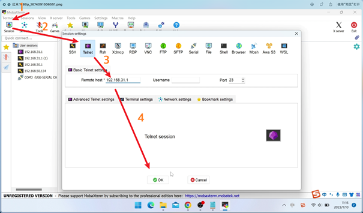
接下来我们需要复制粘贴一些代码到telnet里执行即可。
1. 修改root密码为admin（不修改也可以通过SN计算默认密码)这里我们修改一下
echo -e 'admin\nadmin' | passwd root
2、固化SSH
bdata set boot_wait=on
bdata commit
nvram set ssh_en=1
nvram set telnet_en=1
nvram set uart_en=1
nvram set boot_wait=on
nvram commit
sed -i 's/channel=.*/channel="debug"/g' /etc/init.d/dropbear
/etc/init.d/dropbear restart
输入命令后没有反馈信息，不用担心，已经执行成功了。
3、永久开启SSH的代码（这样即使路由器重启也不会影响SSH）注意这步需要路由器能够联网。
mkdir /data/auto_ssh && cd /data/auto_ssh
curl -O https://cdn.jsdelivr.net/gh/lemoeo/AX6S@main/auto_ssh.sh
chmod +x auto_ssh.sh
uci set firewall.auto_ssh=include
uci set firewall.auto_ssh.type='script'
uci set firewall.auto_ssh.path='/data/auto_ssh/auto_ssh.sh'
uci set firewall.auto_ssh.enabled='1'
uci commit firewall
4、接下来还需要修改时区设置，输入：
uci set system.@system[0].timezone='CST-8'
uci set system.@system[0].webtimezone='CST-8'
uci set system.@system[0].timezoneindex='2.84'
uci commit
5、最后一步，关闭开发/调试模式。在提示符后输入
mtd erase crash
6、然后输入reboot重启路由
reboot
成功登录ssh之后，我们就相当于获取了路由器的最高权限。
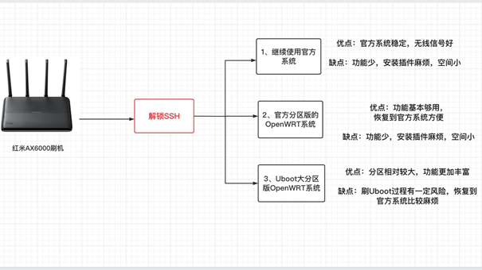
解锁ssh之后我们就有三种刷机方案选择，第一种是继续沿用目前小米路由器官方固件。我们
解锁ssh之后我们就有三种刷机方案选择，第一种是继续沿用目前小米路由器官方固件。我们可以通过ssh的命令行的方式来安装需要插件。恩山论坛里有安装各类插件的方法，大家参考教程去做就可以。
相对来说官方的固件稳定，无线信号好，而且可以享受官方的固件更新。缺点是用ssh的方式安装插件有点太麻烦了，而且官方的原版固件的功能太少了。完全不能发挥MT7986A这颗soc强大的性能。
所以就有了后两者刷机方案：刷一个版本的openWRT系统：
我们到论坛里下载红米ax6000的openWRT固件时会看到楼主一般会发布两个版本固件。一个是官方分区版，另一个是uboot大分区版本。这里我简单解释下两个版本的区别：
红米AX6000的实际ROM大小是128M，不过小米官方的固件功能非常少，根本用不到这么大的空间。官方默认的固件分区大小只有30M左右。
所以如果不改变官方分区大小的情况下，官方分区版本的openWRT固件最大就只能有30多M体积。 这么点容量的固件能安装的插件就少的可怜，只能够最基本日常使用。
官方分区版优点是可以很方便的恢复到官方版本，一旦你觉得系统不稳定或者用不惯op系统，随时都可以用官方的救砖工具恢复到官方版本。
不过既然路由器实际ROM大小有128M，为了更好的利用空间，就有大神开发出了大分区的uboot版本。这样就能安装体积更大大固件，还能预留更多的空间给用户折腾。而且刷好了uboot以后，刷不同版本第三方的固件就非常方便，也不用担心设备会变砖。但是刷了uboot版本就要官方固件说再见了，而且刷写uboot的的过程会存在本身一定风险，刷写过程中是不能断电的。
下面我会依次介绍两种openwrt固件的刷写方法，如果你只是想尝试下第三方固件，那么刷官方分区版比较合适。如果想最大程度挖掘这款路由器的性能还是推荐用大分区的uboot版本。虽然刷机有风险，但相信很多小伙伴和我一样买这款路由器就是为了折腾的。
3、官方分区版刷机教程
我们先来介绍下官方分区版的刷写方法，大致过程是先刷入一个过渡固件，再从过渡固件刷成openwrt固件。
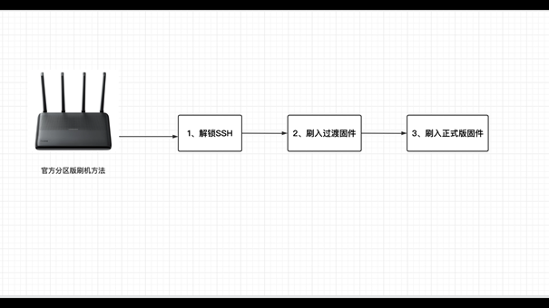
先用ssh的方式登录到路由器。
一、刷入过渡固件
输入代码：
cat /proc/cmdline
查看
firmware（固件版本）=1或者0，如果结果是0就执行代码：
nvram set boot_wait=on
nvram set uart_en=1
nvram set flag_boot_rootfs=1
nvram set flag_last_success=1
nvram set flag_boot_success=1
nvram set flag_try_sys1_failed=0
nvram set flag_try_sys2_failed=0
nvram commit
cd /tmp
curl -L http://sebs.oss-cn-shanghai.aliyuncs.com/initramfs-factory.ubi -o initramfs-factory.ubi
ubiformat /dev/mtd9 -y -f /tmp/initramfs-factory.ubi
reboot -f
如果结果是1就执行：
nvram set boot_wait=on
nvram set uart_en=1
nvram set flag_boot_rootfs=0
nvram set flag_last_success=0
nvram set flag_boot_success=1
nvram set flag_try_sys1_failed=0
nvram set flag_try_sys2_failed=0
nvram commit
cd /tmp
curl -L http://sebs.oss-cn-shanghai.aliyuncs.com/initramfs-factory.ubi -o initramfs-factory.ubi
ubiformat /dev/mtd8 -y -f /tmp/initramfs-factory.ubi
reboot -f
执行完毕后，路由器被自动刷入一个过渡固件。注意执行这步需要路由器可以联网。
过渡固件的管理ip：192.168.5.1
用户名：root
密码：password
无线WiFi名称：openWRT
无线密码：password
这里有一个小坑，我的过渡固件刷好以后。连接到路由器并没有自动分配IP地址，我手动设置电脑的IP为：192.168.5.2就可以成功连上。
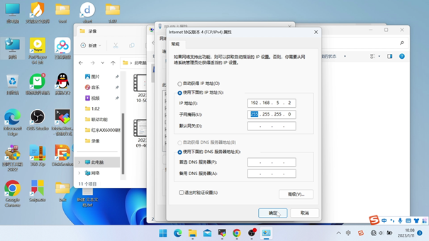
进入过渡系统之后，我们需要打开
服务里的终端选项，然后用root登录，密码是：password
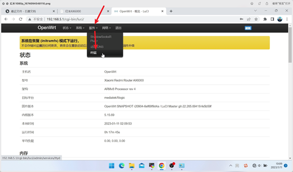
fw_setenv boot_wait on
fw_setenv uart_en 1
fw_setenv flag_boot_rootfs 0
fw_setenv flag_last_success 1
fw_setenv flag_boot_success 1
fw_setenv flag_try_sys1_failed 8
fw_setenv
flag_try_sys2_failed 8
接下来我们可以选择一个官方分区版openwrt固件刷入。我这里推荐237大神制作的闭源固件。当然用别的版本固件也是可以的，不过一定要下载带官方分区版的字样的固件。
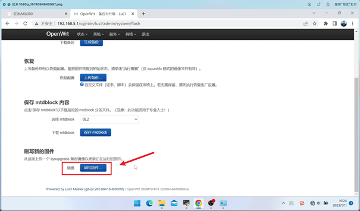
打开系统＞备份＞升级，选择最后一项：刷写新的固件。然后选择准备好固件点击上传。上传完之后记得取消“保留当前配置”再点击继续。
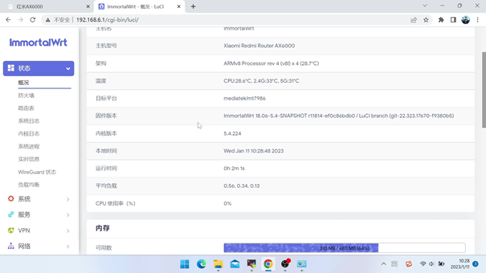
等待刷写完毕并自动重启后，就进入正式版的openWRT系统了。
正式版的openWRT
系统后台地址是 192.168.6.1 用户名和密码依然是 root 和 password，默认的网口 1 是 wan 口，剩下的都是 lan 口。
至此我们已经成功红米AX6000上刷入了官方分区openwrt系统。237大神已经为固件做了比较完善的闭源驱动。